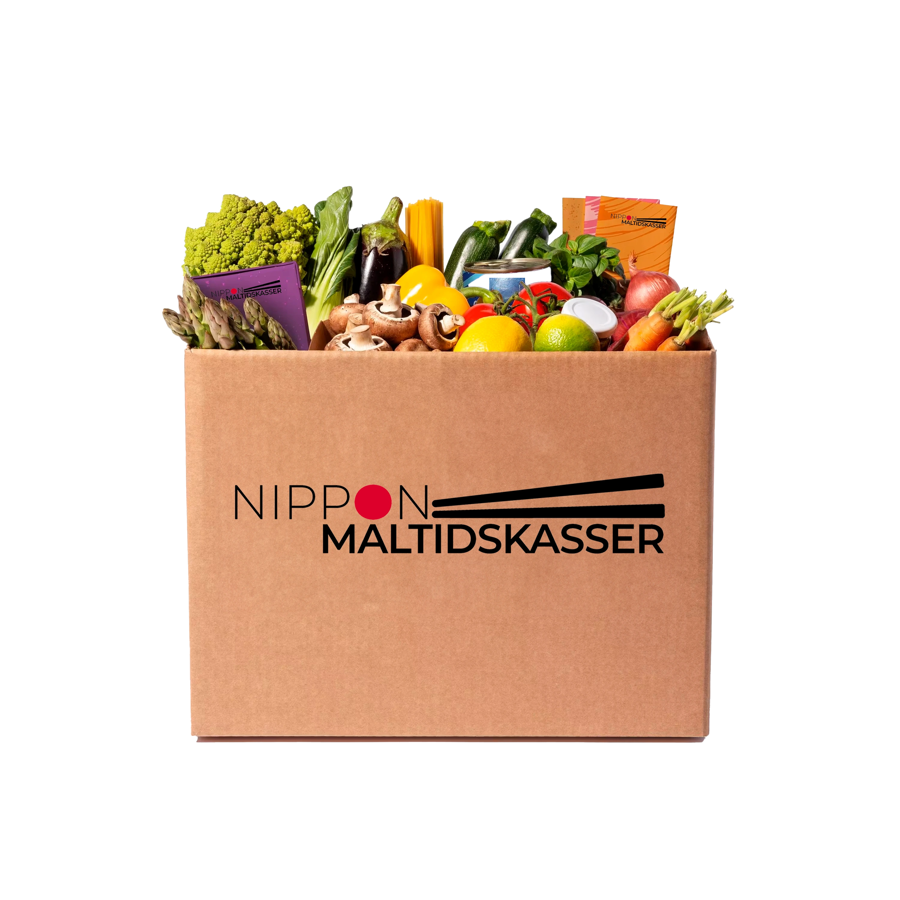

Basis kassen
Basis kassen giver dig en nem og lækker introduktion til det japanske køkken. Med friske ingredienser og smagfulde opskrifter kan du nemt tilberede autentiske retter som ramen, nudelskåle og risretter, der både mætter og begejstrer. Perfekt til dig, der ønsker et sundt og hurtigt måltid uden besvær – klar på under 30 minutter!
3
Pris: 300 kr
Opskrift
Denne opskrift giver dig en smagfuld ramen med en fyldig fond, kombineret med ingefær, hvidløg og sojasauce. Nudlerne serveres med enten tofu eller kylling, og toppes med friske grøntsager som spinat og shiitake. Blødkogte æg fuldender retten, som er enkel at lave og fyldt med autentiske japanske smagsnuancer. Perfekt til et hurtigt, varmt måltid.
Ingredienser
- 2 liter grøntsags- eller kyllingefond
- 4 fed hvidløg, knust
- 1 stk. ingefær (ca. 5 cm), skåret i skiver
- 2 spsk. sojasauce (eller tamari for glutenfri)
- 1 spsk. sesamolie
- 400 g nudler (normale eller glutenfri)
- 200 g tofu eller kylling (baseret på diætvalg)
- 200 g blandede grøntsager (f.eks. spinat og shiitake)
- 4 æg (udelades ved vegansk valg)
Fremgangsmåde:
- Bring fonden i kog sammen med hvidløg og ingefær. Lad det simre i 20 minutter.
- Tilsæt sojasauce (eller tamari for glutenfri) og sesamolie. Smag til og lad det simre i yderligere 5 minutter.
- Kog nudlerne efter anvisning på pakken (glutenfri hvis valgt).
- Kog æggene i 6-7 minutter for blødkogte (udelad hvis vegansk).
- Steg tofu eller kylling, afhængigt af valg (udelades ved vegansk).
- Tilføj grøntsager (spinat og shiitake) lige før servering.
- Fordel nudlerne i skåle, hæld suppen over, og tilsæt topping efter diæt og præferencer.
- Server straks, mens retten er varm.